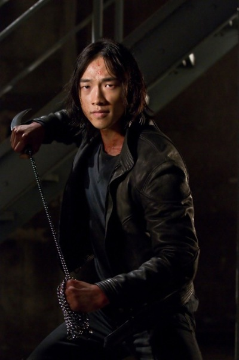

Call us on
Call us on  English
English Russian
Russian Kazakh
Kazakh Ukraine
Ukraine
Love polls? Do you want to see epic battles of various characters from various universes of pop culture? Then join our public INFINITY FIGHTS and vote for the strongest hero! Also in the discussions you can offer your options for battles. We welcome all newcomers and appreciate the old, but nevertheless we appreciate mutual respect and adequate behavior. Peace to all, meet in the heat of battle!
Raizo
""This is not my family. And you are not my father. And the breath I take when I kill you will be the first breath of air in my life.""
Biography:
Skills and powers.
- He is able to easily cut people in half along with firearms;
- Kick an adult person a few meters away with a kick;
- Throw shurikens with sufficient strength and speed, so that they pierce the body armor of the special forces, helmets to protect against bullets;
- As a workout, Raizo does handstand push-ups on the tips of the nails.
- Agile and quick enough to dodge other ninja's shuriken while taking on a few more in close combat;
- Caught another assassin's sword with the kyoketsu-shoge chain in mid-swing;
- Able to cut a person with a sword into many pieces in less than a second;
- As a training, he lived blindfolded for a year and learned to fight blindly without loss of efficiency;
- Raizo is able to hear someone else's speech from a distance of a couple of tens of meters through several thick walls or a heartbeat at a distance of several meters, and also hears everything that happens around him in a dream.
- Able to tune in to individual sounds, ignoring the rest of the surrounding noise;
- Trained to track a target by scent "like a wolf";
- By relying on his senses, Raizo is able to accurately blindly determine the location of specific people in a room, detect the approach of other ninja from a considerable distance, determine if a person is lying;
- Dual ninjato swords;
- Upgraded kyoketsu-shoge. Knife with a curved double-edged blade on a chain 3 to 5 meters long. At the other end is a small metal weight;
- Shurikens of various sizes. From normal to wide enough to cut a person's leg at the level of the lower leg;
- Small wrist claws for climbing walls;